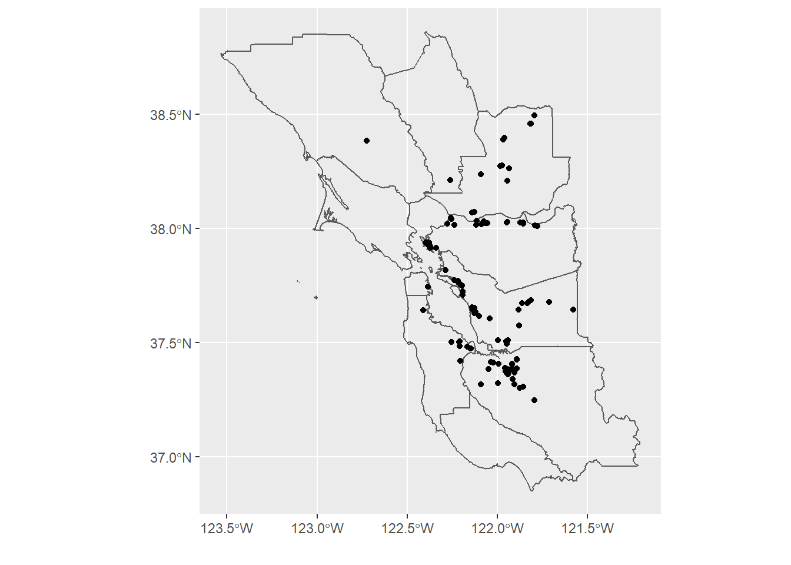
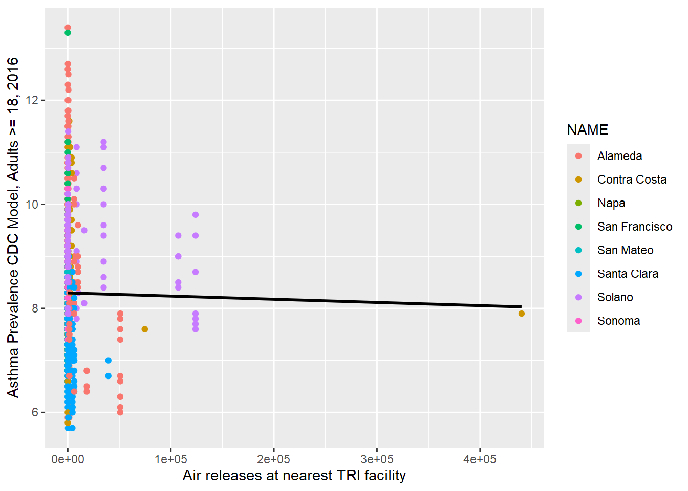

3 Distance from census tract centroid to closest TRI site
In the Spatial Analysis chapter section on Distance and specifically Distance to Closest Feature, we looked at point to closest point distances. Here’s another example of this that attempts to find the output of closest TRI facility to a census tract where we might compare health or socioeconomic variables to that value. The igisci::BayAreaTracts data has census data from 2010 by census tracts in the SF Bay area. In addition to the distance functions, the code below includes a few useful sf functions applied to that data.
library(igisci); library(sf); library(tidyverse)
TRI_CA <- read_csv(ex("TRI/TRI_2017_CA.csv"))
TRI_BySite <- TRI_CA %>%
mutate(all_air = `5.1_FUGITIVE_AIR` + `5.2_STACK_AIR`) %>%
mutate(carcin_release = all_air * (CARCINOGEN == "YES")) %>%
group_by(TRI_FACILITY_ID) %>%
summarise(
count = n(),
air_releases = sum(all_air, na.rm = TRUE),
fugitive_air = sum(`5.1_FUGITIVE_AIR`, na.rm = TRUE),
stack_air = sum(`5.2_STACK_AIR`, na.rm = TRUE),
FACILITY_NAME = first(FACILITY_NAME),
COUNTY = first(COUNTY),
LATITUDE = first(LATITUDE),
LONGITUDE = first(LONGITUDE))
co <- st_read(ex("BayArea/BayAreaCounties.shp"))
freeways <- st_read(ex("CA/CAfreeways.shp"))
censusBayArea <- st_make_valid(st_read(ex("BayArea/BayAreaTracts.shp")))
incomeByTract <- read_csv(ex("CA/CA_MdInc.csv")) %>%
dplyr::select(trID, HHinc2016) %>%
mutate(HHinc2016 = as.numeric(str_c(HHinc2016)),
joinid = str_c("0", trID))
censusBayArea <- censusBayArea %>%
mutate(whitepct = WHITE / POP2010 * 100) %>%
mutate(People_of_Color_pct = 100 - whitepct) %>%
left_join(incomeByTract, by = c("FIPS" = "joinid"))
censusCentroids <- st_centroid(censusBayArea)
census <- censusBayArea
bnd <- st_bbox(co)
TRIdata <- TRI_BySite %>%
filter(air_releases > 0) %>%
filter((LONGITUDE < bnd[3]) & (LONGITUDE > bnd[1]) & (LATITUDE < bnd[4]) & (LATITUDE > bnd[2]))
BA_counties <- co %>% dplyr::select(NAME, CNTY_FIPS) %>% st_set_geometry(NULL)
TRI_sp <- st_as_sf(TRIdata, coords = c("LONGITUDE", "LATITUDE"), crs=4326) %>%
st_join(censusBayArea) %>%
filter(CNTY_FI %in% BA_counties$CNTY_FIPS)
TRI2join <- TRI_sp %>%
st_set_geometry(NULL) %>%
rowid_to_column("TRI_ID")ggplot() +
geom_sf(data = co, fill = NA) +
geom_sf(data=TRI_sp) +
coord_sf(xlim = c(bnd[1], bnd[3]), ylim = c(bnd[2], bnd[4])) +
labs(x='',y='')
FIGURE 3.1: EPA Toxic Release Inventory (TRI) facilities 2017
Asthma model related to distance to nearest TRI facility.
# CDC data
CDCdata <- read_csv(ex("TRI/CDC_health_data_by_Tract_CA_2018_release.csv")) %>%
mutate(
lon = as.numeric(str_sub(Geolocation, 17, 30)),
lat = as.numeric(str_sub(Geolocation, 2, 14)),
CDC_CNTY_FIPS = str_sub(TractFIPS, 2, 4)) %>%
filter(CDC_CNTY_FIPS %in% BA_counties$CNTY_FIPS)
CDCbay <- st_as_sf(CDCdata, coords = c('lon', 'lat'), crs=4326)
# D to TRI: create vector of index of nearest TRI facility to each CDC (tract centroid) point
nearest_TRI_ids <- st_nearest_feature(CDCbay, TRI_sp)
# get locations of each NEAREST TRI facility only
near_TRI_loc <- TRI_sp$geometry[nearest_TRI_ids]
CDCbay <- CDCbay %>%
mutate(d2TRI = st_distance(CDCbay, near_TRI_loc, by_element=TRUE),
d2TRI = units::drop_units(d2TRI),
nearest_TRI = nearest_TRI_ids) %>%
left_join(BA_counties, by = c("CDC_CNTY_FIPS" = "CNTY_FIPS"))
CDCTRIbay <- left_join(CDCbay, TRI2join, by = c("nearest_TRI" = "TRI_ID")) %>%
filter(d2TRI > 0) # %>%CDCTRIbay %>%
ggplot(aes(air_releases, CASTHMA_CrudePrev)) +
geom_point(aes(color = NAME)) + geom_smooth(method="lm", se=FALSE, color = "black") +
labs(x = "Air releases at nearest TRI facility",
y = "Asthma Prevalence CDC Model, Adults >= 18, 2016")
FIGURE 3.2: Asthma prevalence related to nearest TRI total releases
This is an admittedly crude analysis, lumping all releases together, and so it’s not surprising that there’s no clear relationship over the whole Bay Area. There’s quite a lot you could explore in the TRI data, and you might want to focus on one county, specific toxins, or probably aggregate releases at the total output in the area. And analyzing health data is very challenging given the wide range of factors influencing patterns. You might also consider looking at earlier TRI data (the igisci extdata "TRI" folder has it back to 1987, for California.)